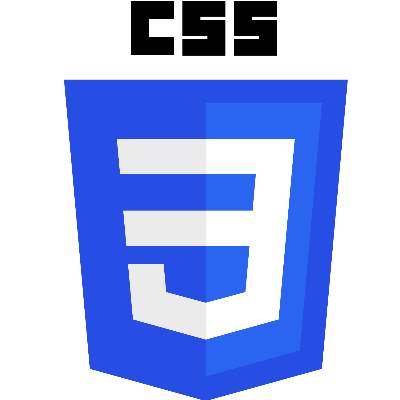
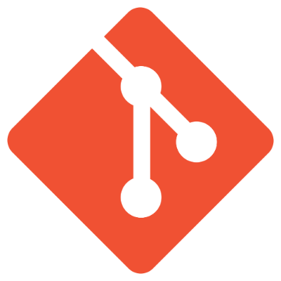
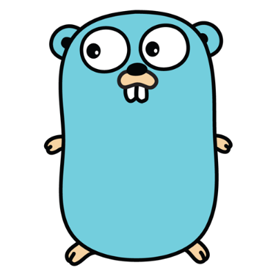
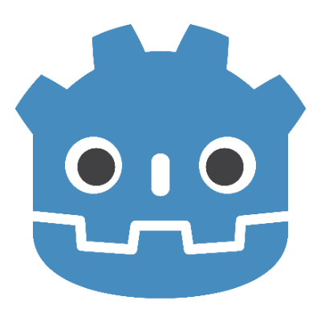
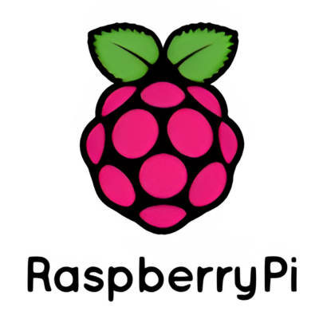
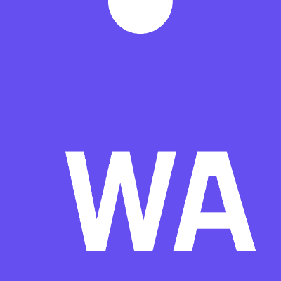

about
Hey! I am Arnav but I often go by Snowlock or Solar! I got into coding and gamedev out of pure curiosity & have been mostly self-taught.
Right now, I'm balancing academic exams while simultaneously learning cybersecurity, computer science, and Linux (arch btw). When I'm not studying, I love designing games and building projects that actually make life easier.
Here are some languages & tools I use!:






projects
I mostly dabble in Python, C and Gamedev (Godot!). Here are a few projects that are on my GitHub!
Please keep in mind that a lot of my older projects are not yet upploaded to github!-
001
pyScan
A lightweight & fast concurrent TCP port scanner built in python, using socket. Also features unittest & github CI/actions.
-
002
ocelot-css
A dark color scheme used by this website, and by my blog. Designed for better reading conditions (medium contrast, warm neutrals, no pure white or pure black.
Setup
I use Arch Linux, with either lite-xl or vscodium
as editors. Along with that, my game engine of choice is Godot, and my favourite
C compiler is gcc!
now
Computer science is no more about computers than astronomy is about telescopes.
-- Edsger Dijkstra
Currently I am learning about cybersecurity, including portswigger labs, and actually making tools helping in defense. The first one I've made is pyScan, and I hope to still improve it, till it becomes a good enough tool
On the gamedev side, I do hope to continue making small
games here and there, and also, to upload all of my previous
games on itch.io for archive purposes!
contact
The best way to reach me is by mail! I read & reply to everything
- snowlock007@gmail.com : For recruiters, project proposals, and GitHub collaboration
- arnavjagtap.dev@gmail.com : For everything else
availability
Currently open to projects & open-source collabs. Academics are keeping me pretty busy right now, so I'm not available for larger projects.
Hit me up if you want to build something.